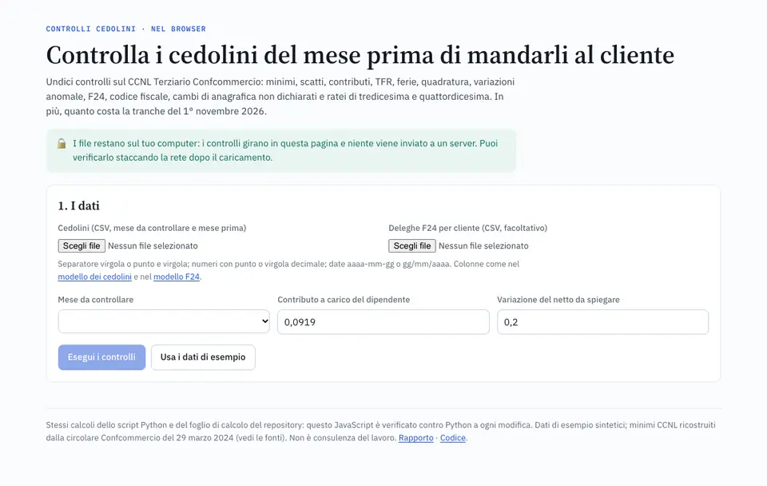

Payroll operations
Payroll checks before the payslips go out
Fourteen checks on Italian payslips under the retail and services contract (CCNL Terziario): minimum pay, seniority steps, INPS contributions, severance accrual, holidays, the F24 tax payment, master-data changes nobody declared, 13th and 14th month pay, and for leavers untaken holiday and notice. Plus what the November 2026 pay rise costs each client.
- Finds all 35 planted errors with no false alarms; a statistical anomaly detector on the same data finds about a third.
- Three twins, one answer: Python, a live-formula sheet (580 checks) and a browser tool (2,219 values) agree, and files never leave the computer.
- Sources on every rule, and a test that keeps the one error no check can see on record.
The tool in English and Italian; the report and the runbook in Italian, the language of Italian payroll.